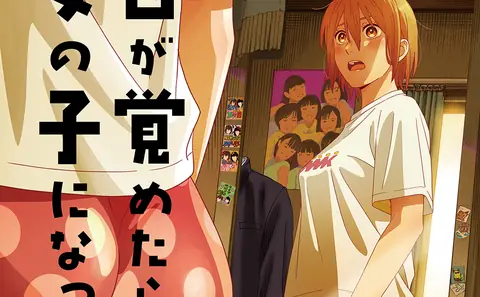
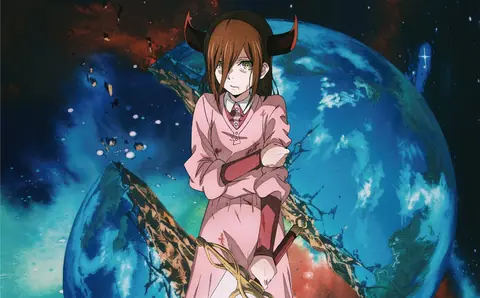
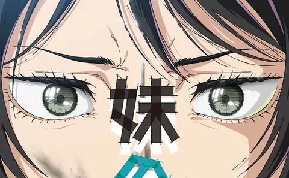
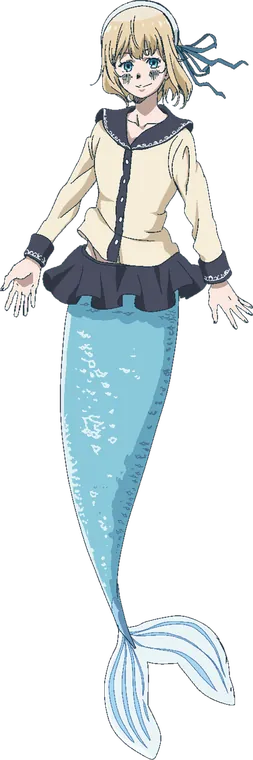
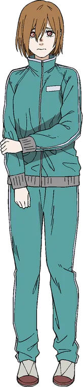
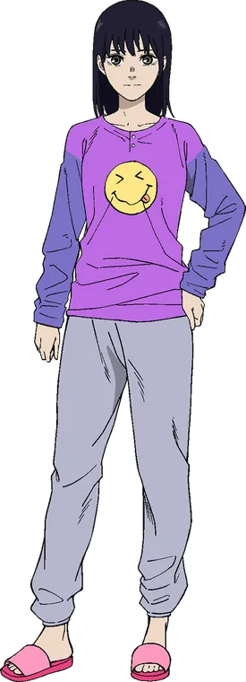
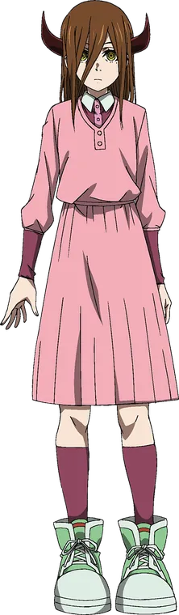
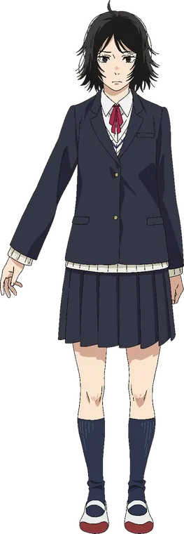
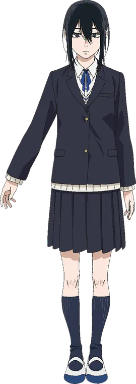

Contents
Overview#
The paneling is more confident and the themes more personal: family, identity, the body, and shame. This is where the seeds of Chainsaw Man are easiest to spot.
Inside: a piano at the bottom of the sea, a teenager who wakes up in a girl’s body, a horned girl prophesied to end the world, and a nude painting put on display at school.
In this volume#
Click one to jump to its introduction on this page.
Mermaid Rhapsody
人魚ラプソディA piano at the bottom of the sea, a boy who holds his breath to play it, and a mermaid who listens.

Woke-Up-as-a-Girl Syndrome
目が覚めたら女の子になっていた病One morning Toshihide wakes up in a girl’s body. The condition can’t be cured; the only thing he can change is how he faces it.

Nayuta of the Prophecy
予言のナユタShe was born with horns and prophesied to end the world. Her brother cares for her anyway.

Sisters
妹の姉Her older sister wins an art prize. The painting: her little sister in the nude, hung at school for a whole year.
01Mermaid Rhapsody#
人魚ラプソディ · Ningyo Rapusodi

Toshihide plays a piano on the seabed, holding his breath for impossibly long stretches. When he runs out of air, a mermaid named Shiju saves him.
They grow close through underwater piano lessons, but Toshihide starts to fear that Shiju might see him as prey.
Why it stands out: Beautiful and a little unsettling at once: music, the sea, and suspicion creeping in right at the moment of closeness.



ShijuThe mermaid who learns piano from him.02Woke-Up-as-a-Girl Syndrome#
目が覚めたら女の子になっていた病 · Me ga Sametara Onnanoko ni Natteita Yamai

Diagnosed with an incurable condition, Toshihide is shunned and harassed by classmates, and things with his girlfriend, Rie, become awkward.
His feelings toward Rie’s older brother, Akira, begin to shift too. Slowly he learns to face his problems head-on and redefine who he is.
Why it stands out: Identity and the body handled honestly and awkwardly, without preaching. One of the most personal stories in the collection.


ToshihideWakes up as a girl and has to learn self-acceptance.

RieToshihide’s girlfriend, unsure how she should act.03Nayuta of the Prophecy#
予言のナユタ · Yogen no Nayuta

Nayuta was born with horns, no human heart, and a cursed voice. A prophecy says she will bring about the end of the world.
Her brother Kenji devotedly cares for her as public fear grows, even while he struggles with what his sister might really be.
Why it stands out: A devoted sibling bond in a world gripped by fear. Nayuta is the girl on the 22-26 cover, and the name "Nayuta" later reappears in Chainsaw Man.


NayutaThe horned girl prophesied to end the world.KenjiThe brother who never lets go of his sister.
04Sisters#
妹の姉 · Imōto no Ane

A nude portrait of Mitsuko painted by her older sister, Kyōko, wins the top prize and is displayed at their school for a full year.
Humiliated and teased without end, Mitsuko vows to make her sister suffer the same way.
Why it stands out: A story about art, shame, and sibling rivalry. Many readers see it as a close relative of Look Back, since both are about two people bound together by drawing.


MitsukoThe younger sister who becomes the painting’s subject and a target of mockery.

KyōkoThe gifted older sister whose painting wins the prize.Timeline#
- 2014Mermaid Rhapsody — Jump SQ supplement, January 2015
- 2015Nayuta of the Prophecy — Jump SQ, August 2015 issue
- 2017Woke-Up-as-a-Girl Syndrome — Jump SQ Twitter account (limited release, 2017)
- 2018Sisters — Jump SQ (2018)
Cover#
The cover shows Nayuta standing in the sea with a golden full moon behind her, on a cream background. The title "22-26" is set in blue.

Anime adaptation#
All four stories in this volume are part of the anthology anime 藤本タツキ 17-26 (2025), which had a limited theatrical run in Japan from October 17, 2025 and premiered worldwide on Prime Video on November 8, 2025.
Official trailer
Special PV
Official videos from the avex pictures YouTube channel. Nothing loads from YouTube until you press play.